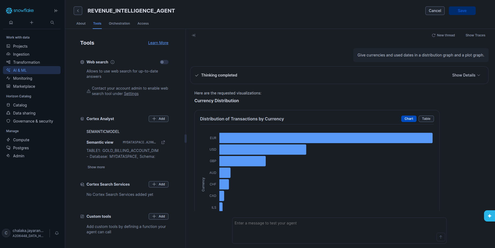

Conversational Revenue Intelligence
Intelligent semantic layer on Snowflake — ask questions in natural language and get insights from your data.
Build an intelligent semantic layer on Snowflake that removes traditional query barriers. Create a natural-language interface that lets analysts explore visual content performance, trends, and user engagement patterns through conversational questions without needing complex SQL.
Reuters Unified Marketplace (RUM) enhanced data ecosystem accessible to every analyst.
Ask in plain language, get visual content performance, trends and engagement insights instantly while keeping the chat history
Semantic view + AI Agent so users can query data via natural language

Streamlit UI with Plotly for full control over visualization
Snow Mind in action
Snow Mind — Pagero Hackstreet Boys